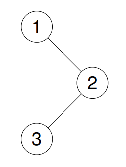
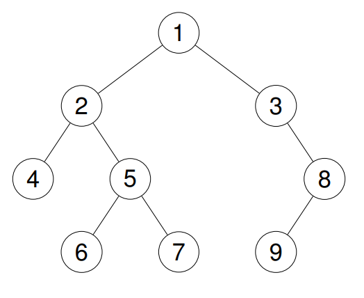

144. 二叉树的前序遍历
迭代栈：弹出一个记一个，右孩子先入栈、左孩子后入栈，左孩子先出——顺序天然就是根、左、右。
思路
- 根先入栈；循环里「弹出一个、记一个」，弹出的结点先压右孩子、再压左孩子。
- 右先压、左后压：栈后进先出，下一个弹出的就是左孩子，左边整棵处理完才轮到右边。
- 空孩子不入栈；空树直接返回空列表。
图解
最优解
1import java.util.*;2 3class Solution {4 public List<Integer> preorderTraversal(TreeNode root) {5 List<Integer> ans = new ArrayList<>();6 if (root == null) return ans;7 Deque<TreeNode> stack = new ArrayDeque<>();8 // 弹出一个记一个；右孩子先入栈（后出），左孩子后入栈（先出）9 stack.push(root);10 while (!stack.isEmpty()) {11 TreeNode node = stack.pop();12 ans.add(node.val);13 if (node.right != null) stack.push(node.right);14 if (node.left != null) stack.push(node.left);15 }16 return ans;17 }18}题目
给你二叉树的根节点 root ，返回它节点值的 前序 遍历。
示例 1：
输入：root = [1,null,2,3]
输出：[1,2,3]
解释：

示例 2：
输入：root = [1,2,3,4,5,null,8,null,null,6,7,9]
输出：[1,2,4,5,6,7,3,8,9]
解释：

示例 3：
输入：root = []
输出：[]
示例 4：
输入：root = [1]
输出：[1]
提示：
- 树中节点数目在范围
[0, 100]内 -100 <= Node.val <= 100
进阶：递归算法很简单，你可以通过迭代算法完成吗？
题面取自力扣当前版本。
数据快照 2026-11-04。题面版权归力扣所有，本站点仅供本人学习使用，请勿对外发布。